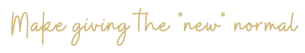

The pandemic has been tough on everyone - some more than others. It has not been easy changing our lifestyles and adjusting. During the holiday season, we normally would be trying to volunteer our time, money and holiday cheer, but with bans and restrictions, it was more difficult to do so. As we head into the new year, the pandemic and the challenges remain, so we can either continue to adjust or take control to create a new normal for ourselves.
Here are three ways to give that do not require you to dip more into your wallet but digging more into what is online and changing the status quo.
1. Make sharing positive posts and comments to others you may not always interact with online a new normal! Use your keypad, you can spread positivity, love, and create impact in more ways than you know. Write about your experiences and share ways to help others that empower them to help themselves through similar predicaments. new create an instagram page that shares knowledge, wisdom and words of kindness about a topic that you are passionate about that you know can help others. Engage a forum, such as reddit, or a comment section on your favourite social media pages and respond to people’s comments and stories on posts in positive and helpful ways. You never know how much an interaction or compliment from a stranger can mean to someone and how much impact it can create.
2. Create a positive online environment where you can offer to give things you already have in your house that you can do away with if someone needs it. Whether it is a textbook, a extra bus ticket you have lying around. Whatever it may be, you’ll be surprised to find that things lying around your house can be something that someone may be in desperate need of. Having a space online that can help others give to one another can create a lovely environment.
3. Make shopping for impact a new normal! Do your regular shopping, earn money back, and be empowered to give money to causes you believe in. You can do this by signing up at www.pachira.ca. Pachira is an organization that has affiliated companies that have offered cashback on your everyday purchases so that you can be empowered to give to causes during a time when it is difficult to do so.
All you have to do is shop at the places you would already be shopping at for yourself whether it is at H&M, Amazon or Bestbuy, when you shop at these stores through Pachira, you will receive money back to save up for charities and causes.
About the Author:
Amal Zafar is a writer and artist from Mississauga, Ontario with a BA in Liberal Studies from Queen’s University and a Graduate Certificate in Professional Writing from Humber College. Amal aspires to make learning more accessible for eager learners of all ages through writing and art.